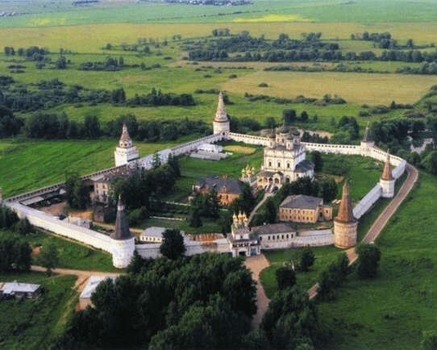

Сам себе путешествуй
Индивидуальные авто-туры на выходные для компании друзей или их семей.
Ценителям своего времени. Мобильное приложение для тех, кто хочет получить готовый маршрут своего путешествия.

Авто-маршруты "Сам себе путешествуй"
- это готовые загородные поездки с аудиогидом, навигацией, необходимой сопровождающей информацией.
Вы можете самостоятельно моделировать свое путешествие, исключая или дополняя его выбранными объектами.
Авто-прогулки "Сам себе путешествуй"
- это прогулки по погоде и вашему настроению.
Сочетайте полезные оздоровительные путешествия с гламурным размещением на природе. Поднимитесь в небо на воздушном шаре или ощутите романтизм экотуризма.
Посетите без виз разные страны в тематических парках или просто откройте для себя новый сорт пива в частной пивоварне.
Примеры наших маршрутов
Иван Грозный в Александрове

Ярославское
направление
- Протяженность ~ 172 км
- Продолжительность ~ 10 ч
- Основных объектов - 3
Тип программы:
познавательно-оздоровительный
Пример аудио-гида
Киногород и знаменитая усадьба

Ленинградское
направление
- Протяженность ~ 104 км
- Продолжительность ~ 7 ч
- Основных объектов - 3
Тип программы:
познавательно-развлекательный
Пример аудио-гида
Волоколамские мотивы
Волоколамское
направление
- Протяженность ~ 158 км
- Продолжительность ~ 10 ч
- Основных объектов - 3
Тип программы:
познавательно-гастрономический
Пример аудио-гида
Тематические парки
- Парк "Кочевник"
- Ярославское направление
- Расстояние от Москвы 115 км
- Рекомендуемая погода: теплая, солнечная
- Впечатления: восторженные

Гастрономические прогулки
- Эко-ферма "Марии Коваль"
- Ярославское направление
- Расстояние от Москвы 110 км
- Рекомендуемая погода: теплая, солнечная
- Впечатления: удовольствия и восторга

Гламурные прогулки
- Глэмпинг
- Дмитровское направление
- Расстояние от Москвы 75 км
- Рекомендуемая погода: летняя
- Впечатления: романтичные
Оздоровительные
- "Термы и фитнес"
- Ярославское направление
- Расстояние от Москвы 34 км
- Рекомендуемая погода: пасмурная
- Впечатления: состояние релакс
Полеты на воздушном шаре
- Клуб воздухоплавания
- Новорижское направление
- Расстояние от Москвы 65 км
- Рекомендуемая погода: безветренная
- Впечатления: восторженные